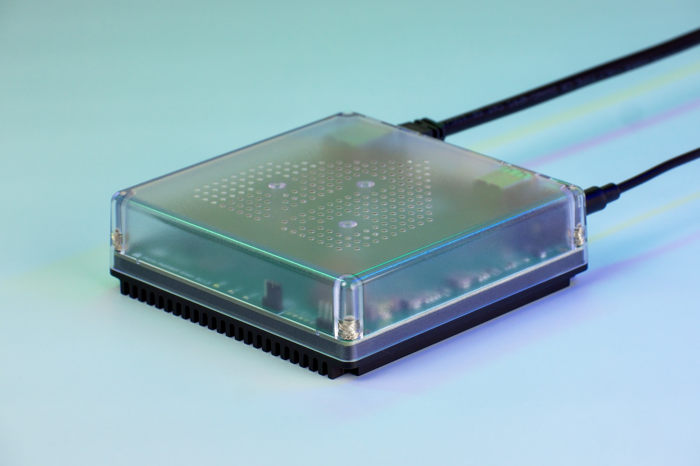
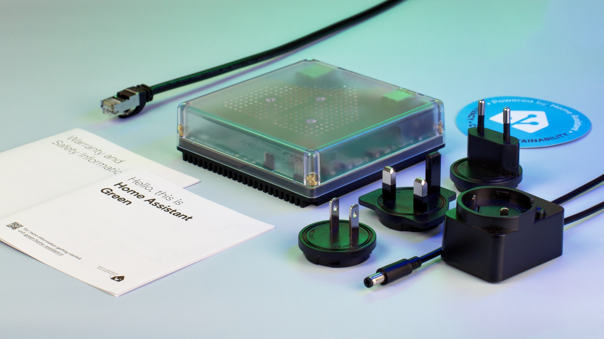

Guide · Hardware
Home Assistant Green vs Raspberry Pi: which should run your home?
Both can run Home Assistant. The difference is what you do before Home Assistant ever boots. Home Assistant Green is the finished appliance: plug in power and Ethernet and set it up through the app. A Raspberry Pi is the do-it-yourself route: you pick the board, power supply and card, flash Home Assistant OS yourself, and house it yourself. If the question is "which should run my home," the short answer is Green for a first system that should just work, a Pi or a mini PC if you want to tinker, expand storage or reuse hardware you own.
This comparison sticks to what Home Assistant's own documentation and product pages say — the Green product page, the Raspberry Pi install guide, the generic x86-64 install guide and the Yellow product page. Where a number isn't published, we say so. For our full write-up of the Green box itself, see Home Assistant Green; for the Pi-specific path, see Home Assistant on Raspberry Pi.

What you get out of the box
Home Assistant Green is a finished computer designed for exactly one job. Per the product page, it is the easiest way to start using Home Assistant: plug in power and Ethernet, and setup happens through the mobile or web app. An internet connection is required only for the initial setup — after that, Home Assistant runs locally. It's fanless, in a translucent polycarbonate enclosure wrapped around a large anodized aluminum heatsink. It measures 112 × 112 × 32 mm and weighs 340 g.

A Raspberry Pi setup is assembled from parts. The official install path is a Raspberry Pi 5 or Pi 4 with at least 2 GB of RAM, with Home Assistant OS written to a microSD card (an A2-labelled card of at least 32 GB is recommended) using Raspberry Pi Imager. Ethernet is required for the install itself; Wi-Fi can be configured afterwards. The docs add a warning worth repeating: use an appropriate power supply, not a random mobile charger. You also supply your own enclosure. The board alone looks cheap, but power supply, card and case close much of the gap with Green's $199 / €179 MSRP.
Specs side by side
| Spec | Home Assistant Green | Raspberry Pi (HA install path) |
|---|---|---|
| SoC | Rockchip RK3566, quad-core Cortex-A55 @ 1.8 GHz | Pi 5 or Pi 4, per HA's docs (raspberrypi.com spec pages were not reachable for this piece) |
| RAM | 4 GB LPDDR4X | At least 2 GB required |
| Storage | 32 GB eMMC (fixed) | microSD card by default; A2 class, 32 GB+ recommended; USB SSD possible |
| Ports | 2 × USB 2.0 Type-A (5 V combined), Gigabit Ethernet, HDMI (diagnostics only), microSD (recovery only) | Per board; Ethernet required for install |
| Power | 12 V DC 1 A barrel supply (included); ~1.7 W idle, ~3 W load | USB-C supply you buy; HA docs warn against underpowered chargers (no idle/load figures published here) |
| Assembly | None — appliance | Flash an SD card, add PSU and case |
| Radio | None built in — add USB Connect ZBT-1/ZBT-2 for Zigbee/Thread | None built in — add a USB radio |
| Price | $199 / €179 MSRP | Board + PSU + card + case (varies) |
The silicon difference is real but easy to overstate. Green's RK3566 uses four efficient Cortex-A55 cores; a Pi 5 uses four higher-performance Cortex-A76 cores. For typical Home Assistant loads — automations, a few hundred entities, an add-on or two — both are adequate per their makers' positioning. Nobody should pick between them on benchmark scores; pick on the shape of the machine.
The Raspberry Pi route, step by step
If you do go the DIY path, Home Assistant's Raspberry Pi guide is the sequence:
- Get a Raspberry Pi 5 or Pi 4 with at least 2 GB of RAM.
- Get an appropriate power supply — the docs specifically warn against a phone charger.
- Get an A2-class microSD card, 32 GB or larger.
- Write Home Assistant OS to the card with Raspberry Pi Imager.
- Insert the card, connect Ethernet, and power on. Initial setup needs the wired network.
- After setup, configure Wi-Fi if you want to drop the cable.
None of this is hard, and the Pi path is well documented. It's just four or five decisions Green makes for you, plus the parts list. There is also a middle ground on the DIY side: Yellow, Home Assistant's own kit. It's a carrier board for a Raspberry Pi Compute Module 4 — you supply the CM4 in the non-PoE version — with a built-in Silicon Labs MGM210P radio covering Zigbee, OpenThread and Matter, and an M.2 M-key slot (PCIe x1) for NVMe SSDs. Worth knowing for the comparison: Yellow is no longer in production but still gets software updates, and Home Assistant now recommends Green plus a Connect ZBT-1 for a plug-and-play setup. One trap from the Yellow docs: the M.2 slot takes NVMe drives, but a Google Coral accelerator does not work in it.
Storage: the Pi's quiet advantage
This is where the DIY route earns its keep. Green's 32 GB eMMC is fixed, the microSD slot is for recovery only, and there is no external-boot storage path — expansion is USB only. A Pi-based setup stores on the SD card by default, but the SD card is also the usual failure point, and one of the reasons to move to a USB SSD once a system matters. Yellow goes further with its NVMe slot.
Home Assistant's recorder and history database grows steadily; many people end up wanting more storage and more speed than an SD card. If you already know you want an SSD in the box, that points away from Green — or toward running Home Assistant on something bigger entirely. Our best mini PC for Home Assistant guide covers that route: Home Assistant supports generic x86-64 hardware, installed as full HAOS on a dedicated 64-bit, UEFI-bootable PC, or as Home Assistant Container (Docker) on an existing machine.
Radios: what either box needs for Zigbee, Thread and Z-Wave
Neither Green nor a bare Pi has a Zigbee, Thread or Z-Wave radio. Whichever you choose, a USB adapter does the radio work — the Connect ZBT-1 or ZBT-2 covers Zigbee and Thread, and a separate USB stick covers Z-Wave. This is the same after the purchase for both boxes, so it doesn't decide the comparison; it just belongs in the budget. Our Connect ZBT-2 piece covers the adapter in detail. The one exception in this family is Yellow, whose MGM210P radio is on the board.
Green's two USB 2.0 ports share a 5 V budget, which is worth reading carefully if you plan to hang several USB devices off it — a radio plus a dongle plus anything else. Per the spec sheet, that's the total for both ports combined.
Power draw: numbers you can plan around
Published figures, not claims: Green idles at about 1.7 W and draws about 3 W under load, on its 12 V 1 A supply. Yellow idles at about 1.5 W — about 2.5 W with an NVMe SSD — and pulls roughly 5–9 W under load. A Pi's draw depends on the board and what's plugged into it; Home Assistant doesn't publish a figure for the Pi path, so we won't invent one. At these levels, a year of electricity is a few dollars for any of them; the practical takeaway is that all of the options are cheap to leave running, and Green is measured and quiet about it.
Which one should you buy?
Buy Home Assistant Green if you're starting from zero and want the supported appliance path: assembled, housed, powered, stored on eMMC, updated by the people who make the software. That is what it exists for, and it's the box Home Assistant now recommends over Yellow.
Choose the Raspberry Pi path if you want to learn the install, you already own a Pi 4 or 5 and a good PSU, or you want a USB SSD behind Home Assistant from day one. It's more work and more small decisions, in exchange for flexibility.
Look at a mini PC if you expect to run heavier add-ons — NVR-style camera recording, big databases, lots of integrations — and want x86 headroom. HAOS installs on any dedicated 64-bit UEFI x86-64 machine, and Docker-based Home Assistant Container is the lighter option.
Chase a Yellow only for its built-in Zigbee/Thread radio and NVMe slot, knowing it's out of production and you're sourcing a CM4 for the non-PoE board yourself.
FAQ
Is Home Assistant Green better than a Raspberry Pi for running Home Assistant?
For most people who want Home Assistant working with the least fuss, yes. Green is fully assembled, boots Home Assistant from built-in eMMC storage, and idles at about 1.7 W. A Raspberry Pi costs less on paper but needs a power supply, an A2-class SD card, an enclosure and manual flashing, and it runs the OS from the SD card by default.
Do I need to build anything for Home Assistant Green, or is the Raspberry Pi route the DIY option?
Green is plug-and-play: power and Ethernet, then setup through the app. An internet connection is needed only for initial setup. The Raspberry Pi route is the DIY option: you buy the board, power supply and SD card, flash Home Assistant OS with Raspberry Pi Imager, and supply your own case.
Can Home Assistant Green use an NVMe SSD or more storage like a Pi can?
No. Green is not expandable internally: there is no M.2 or NVMe slot, the SoC cannot be swapped, and the microSD slot is for recovery only. Expansion is via USB. A Pi can boot and store on a USB SSD, and Home Assistant Yellow has an M.2 M-key slot that takes NVMe SSDs.
Does Home Assistant Green support Zigbee, Thread and Matter out of the box?
No. Green has no built-in radio, so you add a USB adapter such as Home Assistant Connect ZBT-1 or ZBT-2 for Zigbee and Thread, plus a USB stick for Z-Wave if you want it. Home Assistant Yellow has a Silicon Labs MGM210P radio for Zigbee, OpenThread and Matter built in.
What happened to Home Assistant Yellow, and is it still worth buying instead?
Yellow is no longer in production but continues to receive software updates. Home Assistant recommends Green for a plug-and-play experience, plus a Connect ZBT-1 for Zigbee and Thread. Yellow is still interesting if you want its built-in radio and M.2 NVMe slot, but finding one is your problem.
Can I run Home Assistant on a mini PC (x86-64) instead of either, and how does HAOS install there?
Yes. Home Assistant supports generic x86-64 hardware: install Home Assistant OS on a dedicated 64-bit, UEFI-bootable Intel or AMD PC, or run Home Assistant Container (Docker) instead of full HAOS. A mini PC is the step up when you want more headroom than Green or a Pi.
- Primary sources
- Home Assistant Green; Home Assistant on Raspberry Pi; Home Assistant Yellow; Home Assistant on generic x86-64
Want to browse the hardware yourself? Home Assistant Green on Amazon · Raspberry Pi 5 on Amazon · Raspberry Pi 4 on Amazon
As an Amazon Associate, HA News earns from qualifying purchases.